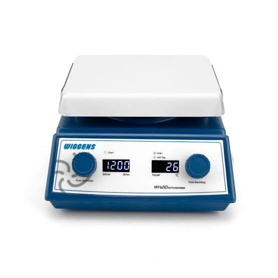

Persiapan Media & Sterilisasi
STR
Bead Sterilizer
Sterilisator manik kaca (glass bead) untuk sterilisasi cepat pinset dan scalpel.
- Tersedia hari ini
- 2 / 2
- Lama pinjam maks.
- 7 hari
Lokasi: Ruang Tanam Aseptik
Ketersediaan di tanggal lain dihitung otomatis saat Anda memilih tanggal di form ajuan.